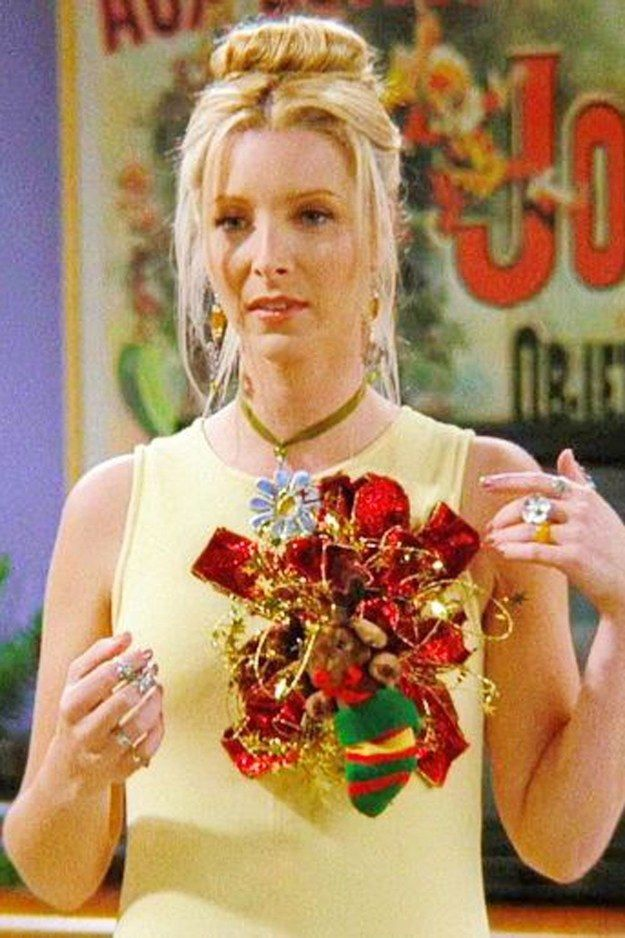
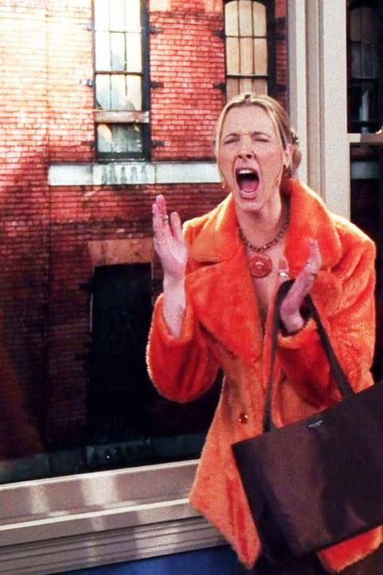

Conheça a Phobe Buffay
Phoebe Buffay é uma das personagens mais únicas e carismáticas de Friends. Conhecida por seu jeito excêntrico e imprevisível, ela sempre surpreende o grupo com comentários aleatórios, histórias inusitadas e uma visão de mundo completamente diferente. Sua personalidade divertida traz leveza e originalidade para a série.
Apesar do jeito engraçado e descontraído, Phoebe possui uma história de vida difícil, o que torna sua força ainda mais admirável. Mesmo enfrentando diversos desafios no passado, ela escolhe enxergar a vida de forma positiva e divertida, demonstrando muita resiliência e autenticidade.
Phoebe também é extremamente sincera e espontânea. Muitas vezes ela fala exatamente o que pensa sem perceber o impacto de suas palavras, criando situações engraçadas e inesperadas. Ao mesmo tempo, ela demonstra ser muito leal e protetora com seus amigos.
Outro ponto marcante da personagem é sua paixão pela música. Com seu violão e músicas criativas, Phoebe cria alguns dos momentos mais icônicos da série, especialmente com a famosa canção “Smelly Cat”. Seu jeito artístico e livre reforça ainda mais sua personalidade única.


Mesmo sendo tão diferente dos outros personagens, Phoebe é essencial para a dinâmica do grupo. Sua mistura de humor, sensibilidade e autenticidade faz dela uma personagem inesquecível e muito querida pelos fãs de Friends.